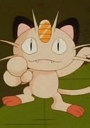

| |
 |
Delia Ketchum |
|
|
|  | Meowth |
|
Meowth is a Pokemon from the Kanto region. Meowths loves shiny objects and has an unique ability to produce coins using Pay Day. It is playful but capacity for human-like intelligence. Masami Toyoshima voiced Meowzie. |